A boho bedroom runs on collected pieces more than matching sets.
Some of that collection should come from a thrift store.
Some is worth making.
And a few pieces are genuinely worth buying new.
Knowing which is which keeps the whole room from feeling like one big online order.
Here are 23 boho bedroom elements, sorted by how they actually get acquired.

Worth Buying New
These either need consistent quality, specific sizing, or just are not realistic to thrift or DIY.
1. Furniture Chosen for the Overall Look
Beyond individual thrifted pieces, some furniture needs to be bought new simply to round out what secondhand hunting has not turned up yet.
This is the practical reality of building a collected-looking room.
Not every piece comes from a lucky find.
Mixing new furniture with the thrifted and DIY pieces elsewhere on this list still reads as boho, as long as the color story stays consistent.
The goal is a cohesive room, not a strict sourcing purity test.
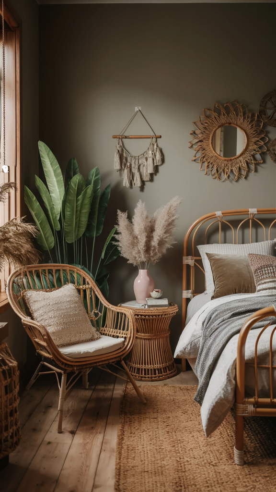
2. Boho Wall Art
A few new prints fill out a gallery wall faster than waiting to find the right vintage pieces.
Mixing a couple of new prints with thrifted frames and personal photos balances cost and character.
This category works well as a hybrid between buying and collecting over time.
Not every piece needs the same origin story to work together.
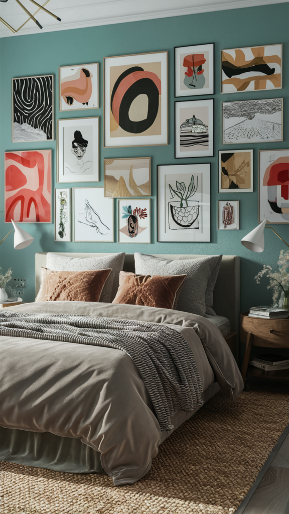
3. Open Shelving
A specific shelf unit, sized to fit a particular wall, is often easier to buy new than to find secondhand in the right dimensions.
This gives the room a spot to display the thrifted and DIY pieces collected elsewhere on this list.
Open shelving works better than closed storage for a style built around visible, personal collections.
What goes on it matters more than the shelf itself.
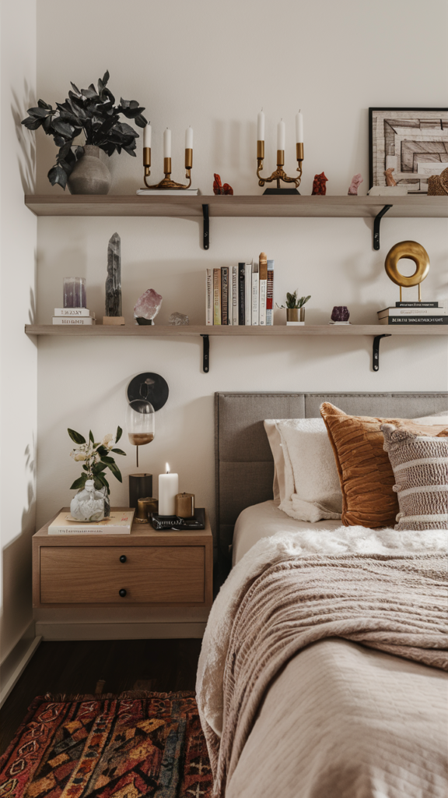
4. A Mix of Accent Pillows
New pillow covers are inexpensive enough that buying a mixed set makes more sense than hunting secondhand for each one individually.
Mixing pattern, texture, and size is the whole point.
Uniformity works against the boho look here.
This is one of the easiest, lowest-cost ways to add personality to a bed or reading nook.
Worth rotating a few new covers in seasonally to keep the room feeling current.
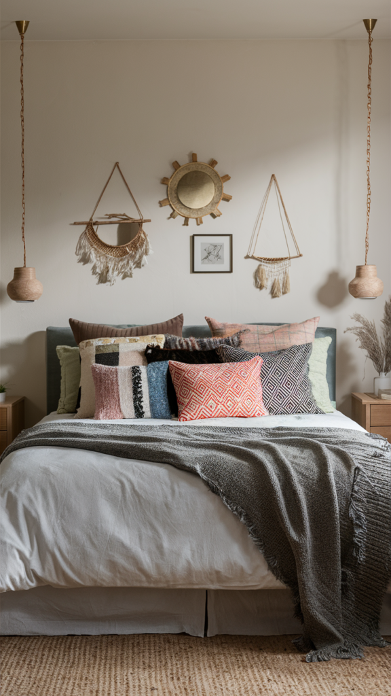
5. Wooden Furniture Elements
A reclaimed wood accent piece can be thrifted, but a specific new piece, a headboard, a shelf unit, is sometimes worth buying for the exact fit.
Wood grounds the more eclectic textile and pattern choices elsewhere in the room.
This category sits between thrift and new depending on exactly what is needed.
Worth checking both routes before deciding.
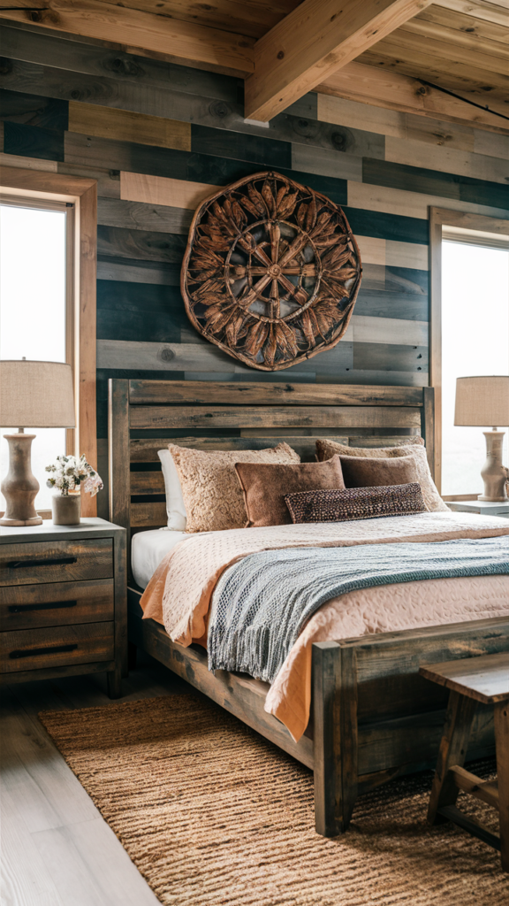
6. Live Plants
Plants need to be purchased fresh, by definition, though pots can absolutely be thrifted.
A mix of trailing and upright varieties fills corners and shelves with the organic texture boho relies on.
This is an ongoing, low-cost investment rather than a one-time purchase.
Worth starting with a couple of low-maintenance varieties before expanding the collection.
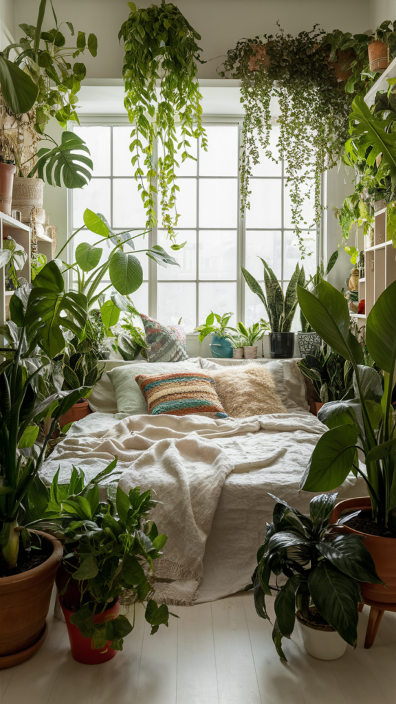
7. Soft Ambient Lighting
String lights and new lamp fixtures are cheap enough new that secondhand rarely makes sense, and electrical safety matters here.
Warm, soft lighting does as much for the boho mood as any single decor object.
A string of warm-toned lights above the bed is a classic, low-cost addition.
Worth buying new for the safety and reliability alone.
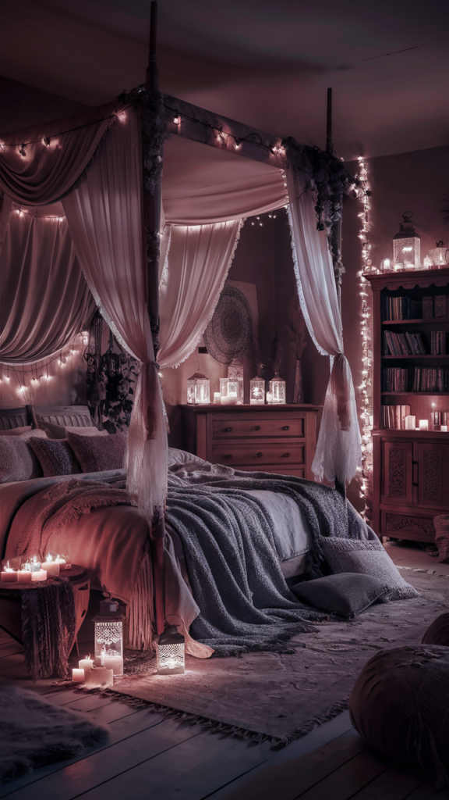
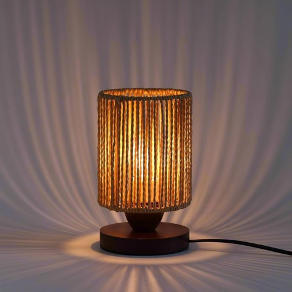
Small Rattan Table Lamp for Bedroom, Boho Bedside Lamp with Warm LED Bulb
Shop on Amazon8. Layered Curtains
Curtain length and fit matter enough that buying new, measured for the actual window, makes more sense than hunting secondhand.
Layering a sheer panel with a heavier drape adds the dreamy, textured look boho goes for.
This is a moderate investment that affects how light moves through the whole room.
Worth prioritizing once the furniture and rug are settled.
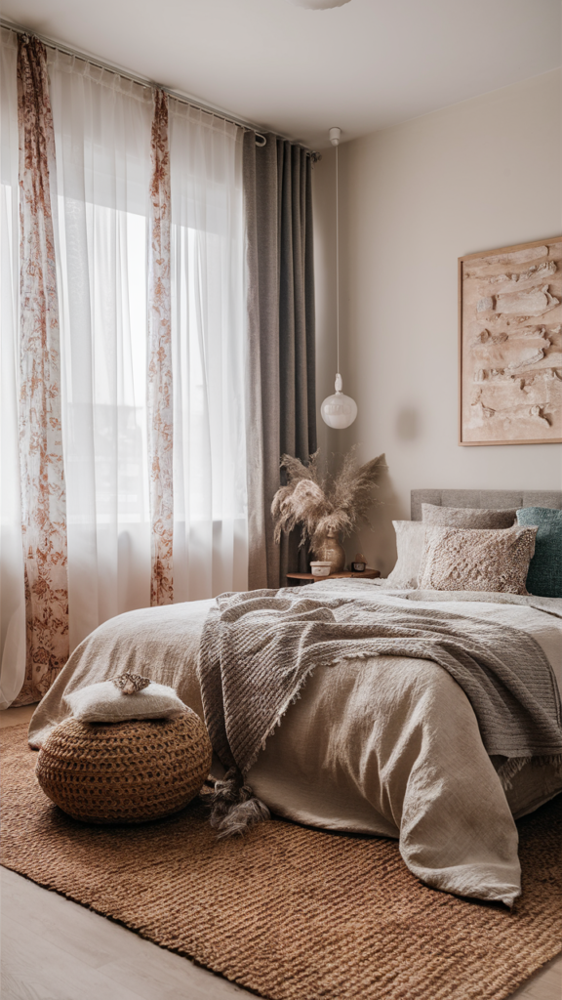
9. Dreamcatchers
A quality dreamcatcher is inexpensive enough new that thrifting one rarely saves meaningful money.
This adds a spiritual, personal touch above a bed or in a window.
Worth choosing one with genuine craftsmanship rather than a mass-produced version.
A small, low-cost addition either way.
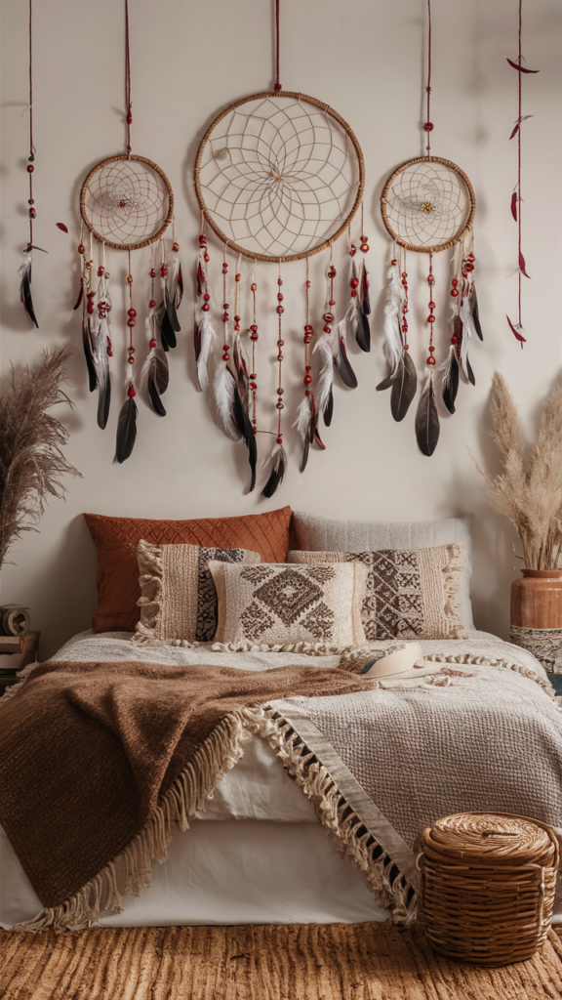
10. Floor Cushions
Floor cushions need to hold up to regular use, which favors buying new over secondhand.
They add a casual, low seating option that suits the relaxed boho mood.
This works well in a corner reading nook or alongside a low coffee table.
A relatively affordable new purchase compared to actual seating furniture.
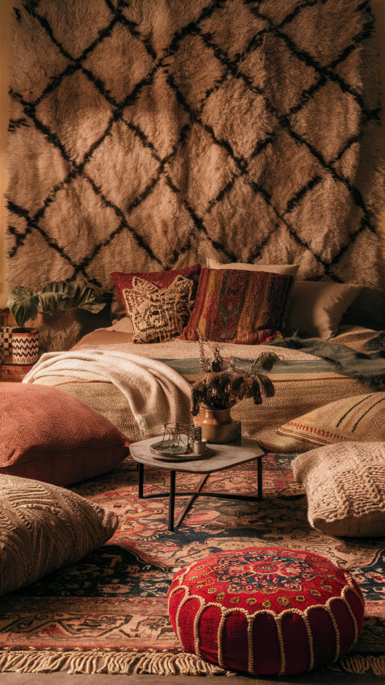
11. A Canopy Bed Frame
A wood canopy frame is a significant furniture purchase that is hard to find secondhand in good condition.
This is a genuine investment piece, but it changes the entire room's feel more than almost anything else on this list.
Worth it if you are fully committing to the boho direction rather than layering it in gradually.
New ensures the structural integrity matters for something holding up drapery and lighting.
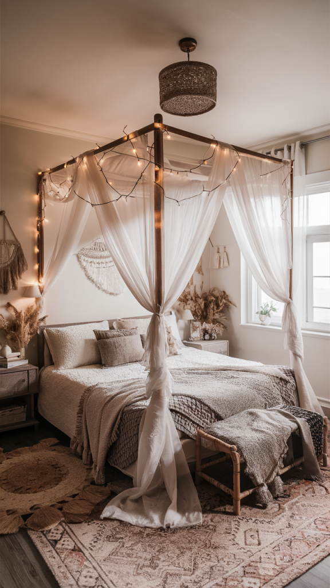
12. New Bedding
Bedding is one category where buying new makes practical sense.
Hygiene and comfort matter more here than character.
Layered textures and patterns in warm, earthy tones carry the boho look even on new sheets and a new duvet.
This is the single piece of furniture-adjacent decor that gets the most daily contact.
Worth spending a bit more here than on purely decorative items.
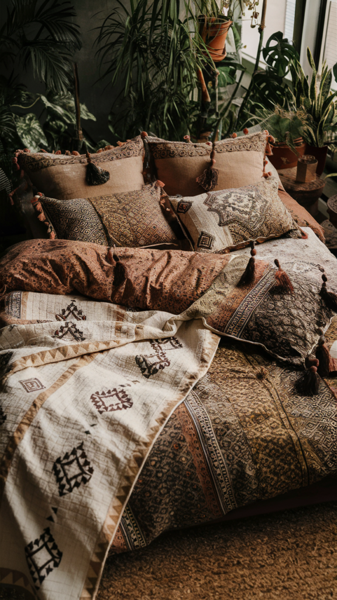
13. A Statement Rug
A large Moroccan-style or patterned rug anchors the whole room, and finding the right size secondhand is genuinely difficult.
This is worth the investment new, since it gets daily wear and needs to last.
A quality rug also holds its look better over years than a cheaper option.
One of the few splurges on this list worth prioritizing.
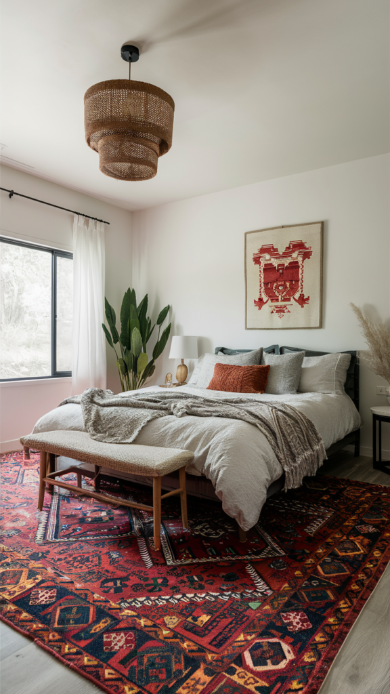
Worth Making Yourself
These reward a bit of time and effort over a straight purchase.
14. A Simple Dried Floral or Plant Display
Drying flowers or arranging cuttings costs almost nothing beyond the initial plant.
This works well in a vase, hung from the ceiling, or tucked into a shelf display.
A lower-maintenance option than live plants, without losing the organic feel.
Worth trying before committing to a larger live plant collection.
15. Fringe and Tassel Details
Adding fringe trim to an existing plain pillow or blanket is a simple sewing project, even for a beginner.
This turns a basic, inexpensive item into something that reads as more intentionally boho.
Fringe trim itself is cheap and widely available at any fabric store.
A low-effort way to upgrade something you already own rather than replacing it.
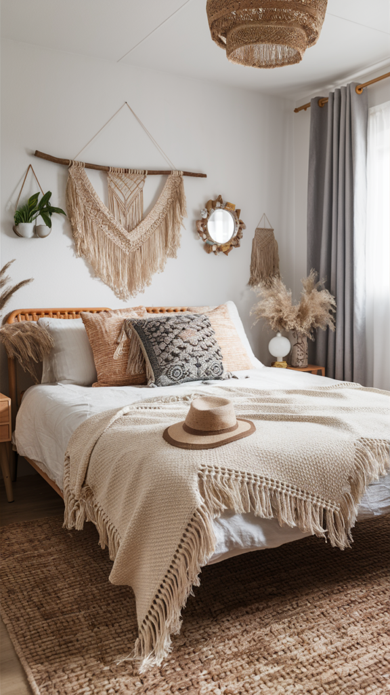
16. A Personal Gallery Wall
Framed photos, travel mementos, and small art pieces assembled over time cost very little beyond frames.
This grows naturally rather than needing to be purchased all at once.
It is one of the few decor elements that genuinely cannot be bought as a finished product.
It has to be assembled personally.
Worth starting early and adding to gradually.
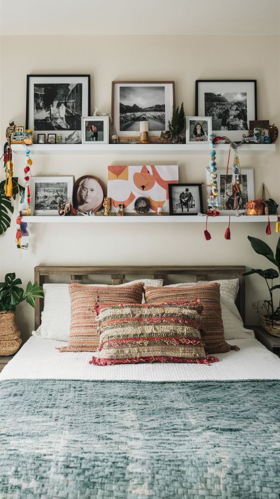
17. Macrame and Woven Wall Hangings
A macrame piece is one of the more approachable DIY projects in this whole style, with plenty of beginner tutorials available.
Materials cost relatively little compared to a finished piece bought retail.
This is a genuine time investment, not a weekend project for most skill levels.
A handmade piece also carries a personal story a purchased one cannot match.
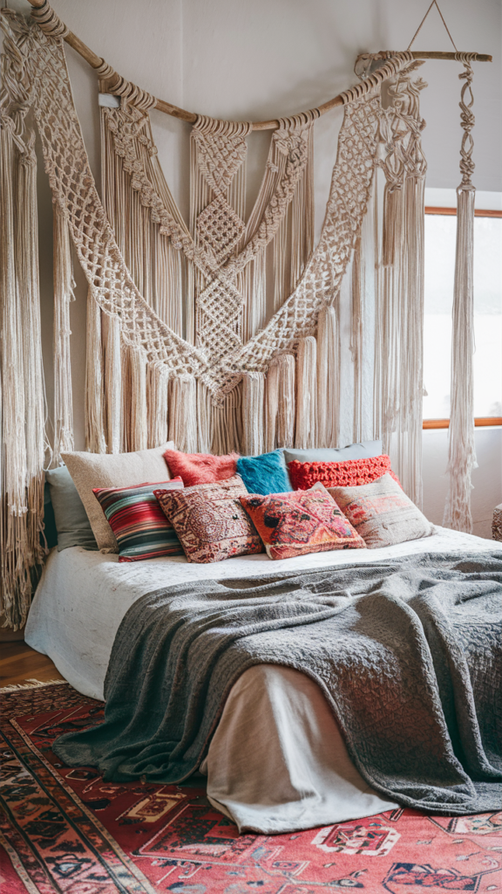
Thrift These First
Secondhand shops, estate sales, and online marketplaces are consistently the best source for these pieces.
18. Books as Decor
A small stack of well-worn books adds texture and a lived-in feel that new decor cannot replicate.
Used bookstores and thrift shops are the obvious source here.
This doubles as actual reading material, not just a prop.
One of the cheapest categories on this entire list.
19. Handwoven Baskets
Baskets for storage or display show up constantly at thrift stores and flea markets.
They work for blankets, plants, or general catch-all storage.
Secondhand versions often have more character than new ones from a big-box store.
An easy, low-cost category to build up gradually over time.
Honey-Can-Do Woven Water Hyacinth Storage Baskets, Set of 3
Shop on Amazon
20. Low-Profile Furniture
A low platform bed or a short dresser suits the relaxed, grounded feel boho goes for.
These show up secondhand regularly, since low-profile styles have been popular for decades in different eras.
This is a bigger furniture purchase, so secondhand saves real money here.
Worth measuring carefully before committing to a secondhand piece, since returns are not usually an option.
GarveeHome Queen Wood Platform Bed Frame
Shop on AmazonIDEALHOUSE Full Low-Profile Wood Platform Bed Frame
Shop on Amazon21. A Carved or Sunburst Mirror
An interesting mirror frame is one of the easiest vintage finds to spot in a secondhand shop.
Carved wood or a sunburst shape both read as boho instantly.
New versions exist but tend to cost significantly more for a similar look.
Worth checking a few thrift stops before paying retail for this one.
Rustic Carved Wood Wall Mirror, 22 x 30
Shop on AmazonCarved Floral Wood Frame Wall Mirrors, 13 x 30, Set of 2
Shop on Amazon22. Vintage Furniture Finds
A rattan chair, a carved wooden trunk, or a mismatched side table all carry more character secondhand than new.
Boho specifically rewards pieces that look collected over time, which a brand-new purchase cannot fake.
Thrift stores and estate sales consistently beat retail on both price and uniqueness here.
Patience matters more than a big budget for this category.
AODK Small 4-Drawer Dresser, Vintage Brown
Shop on AmazonWLIVE Small 4-Drawer Dresser Nightstand, Rustic Brown
Shop on AmazonSettle the Color Story Before You Shop
Before sourcing a single object, the color direction needs to be settled.
Earth tones, warm rust, deep terracotta, and muted sage all read as boho without needing a single purchase to start.
This costs nothing to decide and shapes every acquisition decision that follows.
Trust whatever combination feels right over any strict formula.
Boho rewards instinct more than rules.
There is No Single Right Way to Source It
A boho bedroom built entirely from new purchases rarely achieves the collected feel the style is known for.
One built entirely from secondhand finds takes years and a lot of patience to pull together.
Most real boho bedrooms land somewhere in between: thrifted pieces with character, a few handmade touches, and new purchases where quality and fit actually matter.
Start with the color story, then build out from whichever category is easiest to tackle first.